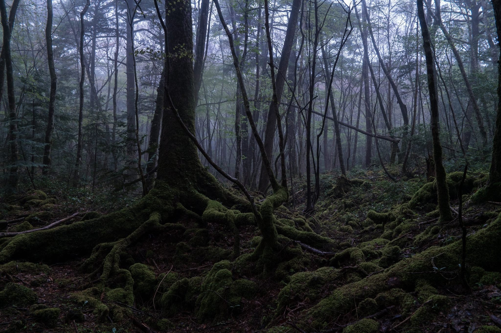

| |
Haunted Places | Paranormal Activities | Exorcisms & Possessions | Social Platforms | Horror Movies | Common Signs | Contact Us |
|---|
Aokigahara ForestMount Fuji, Honshu, Japan |
Nestled at the foot of Mount Fuji, Aokigahara, known as the “Sea of Trees,” is a forest of ethereal beauty and eerie silence. Lava caves, moss-draped roots, magnetic soil, and ghostly folklore make it both mesmerising and unsettling

Aokigahara, often called Jukai or “Sea of Trees”, stretches over roughly 35 square kilometres at the northwestern base of Mount Fuji in Japan. It rests on hardened lava from Fuji’s major eruption in the year 864 CE, a volcanic legacy that shapes much of what the forest is today.
The lava rock leaves a thin soil layer, forcing tree roots to grow over and around it in twisted, sculptural forms. Moss, peat, and volcanic traps produce a lush green undergrowth, a dim filtered light, and a deep, unnatural stillness. The thick trees absorb sound, and the iron-rich lava rock can disrupt compasses and GPS signals, adding to the sense of disorientation.
Caves carved out of lava are among the forest’s most fascinating features. The Fugaku Wind Cave, Narusawa Ice Cave, and Lake Sai Bat Cave draw visitors with their natural ice formations, lava tunnels, and otherworldly glow. In winter, the caves are coated in icicles, turning the forest into a quiet, frozen labyrinth.
Legends, Tragedies, And Modern Measures
Folklore And Reputation
Long before modern times, Aokigahara was woven into Japan’s folklore as a place of restless spirits and lost souls. The forest is said to be haunted by yūrei, the ghosts of those who died in pain or isolation. There are even stories, though debated by historians, of families abandoning elderly or infirm relatives in remote forests during times of famine, a practice known as ubasute.
The forest’s haunting image deepened in the 20th century. The 1960s novel Nami no Tō by Seichō Matsumoto described Aokigahara as a site of suicide, cementing its reputation as a place of sorrow and mystery. Over time, media portrayals and urban legends only added to the sense of foreboding that surrounds it.
The Dark Reality: Suicides And Prevention
Tragically, Aokigahara has become known as one of Japan’s most common suicide sites. Records show dozens of deaths each year, though authorities have stopped releasing official figures to prevent further publicity. In one reported year, 54 deaths were confirmed within the forest..
To combat this, the Japanese government and local authorities have installed signs at the forest entrances urging people to seek help and contact mental health hotlines. Patrols have been increased, and cameras placed at major access points monitor activity to ensure safety. Officials also avoid publicising statistics to discourage media sensationalism, which can lead to harmful attention.
Why It Continues To Captivate And What Visitors Should Know
Aokigahara embodies a striking contradiction. It is at once a place of serene natural beauty and one of heavy emotional weight. The way moss carpets the lava, the twisted roots that seem to claw at the earth, and the faint rustle of wind through the trees create an atmosphere unlike anywhere else in Japan. Yet beneath that beauty lies an almost tangible silence that evokes the stories of those who entered and never left.
Visitors are drawn to its mystery, but the forest demands respect. Staying on marked trails is crucial, as it is dangerously easy to get lost among the dense trees. GPS and phone signals are often unreliable deep within. Visitors are urged to be mindful of the forest’s reputation, to refrain from treating it as a site for dark tourism, and to respect both its natural and human history.
For those sensitive to the forest’s tragic associations, it is worth considering whether a visit would be emotionally safe. The experience can be powerful, but also heavy.
Beyond The Veil |
||
|---|---|---|
|
Explore the unexplained and discover mysteries that challenge the ordinary. |
||
|
||
|
|